3 Heatmap Annotations#
Heatmap annotations are essential components that display additional
metadata or summary plots aligned with the rows or columns of a heatmap.
ComplexHeatmap-py offers comprehensive support for
built-in annotation types as well as custom graphics via
AnnotationFunction. Annotations can be attached to any of
the four margins of a Heatmap() using
top_annotation, bottom_annotation,
left_annotation, and right_annotation.
Each of those four arguments accepts a HeatmapAnnotation
object constructed with HeatmapAnnotation(), or
rowAnnotation() for row-side annotations
(rowAnnotation(...) is simply shorthand for
HeatmapAnnotation(..., which="row")). Below is a quick
example attaching both column and row annotations:
import numpy as np
import pandas as pd
import complexheatmap as ch
from complexheatmap import Heatmap, HeatmapAnnotation, anno_barplot, rowAnnotation
rng = np.random.default_rng(123)
mat = pd.DataFrame(
rng.standard_normal((10, 10)),
index=[f"R{i}" for i in range(1, 11)],
columns=[f"C{j}" for j in range(1, 11)],
)
column_ha = HeatmapAnnotation(foo1=rng.uniform(size=10), bar1=anno_barplot(rng.uniform(size=10)))
row_ha = rowAnnotation(foo2=rng.uniform(size=10), bar2=anno_barplot(rng.uniform(size=10)))
ht1 = Heatmap(mat, name="mat", top_annotation=column_ha, right_annotation=row_ha)
ch.draw(ht1)
Or place them on the bottom and left margins instead:
ht2 = Heatmap(mat, name="mat", bottom_annotation=column_ha, left_annotation=row_ha)
ch.draw(ht2)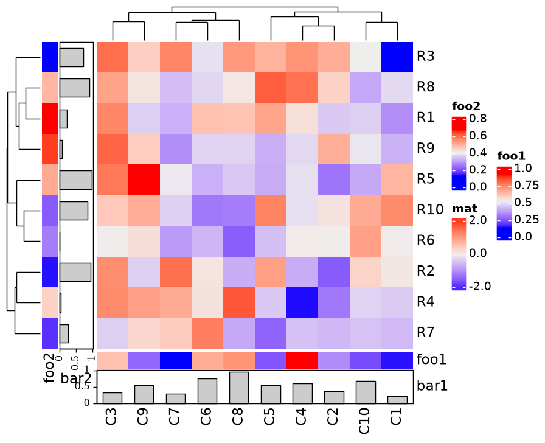
Above, column_ha and row_ha each combine a
vector-like “simple annotation” (foo1,
foo2) with a “complex annotation”
(bar1, bar2 via anno_barplot()).
Annotations are defined as keyword arguments
(name=value).
Heatmap annotations can also stand independently of a single
Heatmap and be concatenated into a HeatmapList
with + horizontally or %v% vertically (see A List of Heatmaps):
# Code only for demonstration
Heatmap(...) + rowAnnotation(...) + ...
Heatmap(...) %v% HeatmapAnnotation(...) %v% ...Inspecting column_ha and row_ha prints a
summary of their orientation, observation count, dimensions, and
component names:
print(column_ha)A HeatmapAnnotation object with 2 annotation(s)
name: heatmap_annotation_1
position: column
items: 10
width: 1npc
height: 15.3515mm
annotations: ['foo1', 'bar1']print(row_ha)A HeatmapAnnotation object with 2 annotation(s)
name: heatmap_annotation_2
position: row
items: 10
width: 15.3515mm
height: 1npc
annotations: ['foo2', 'bar2']In the sections that follow, we illustrate standalone annotation
tracks directly using ch.draw(ha, test=True) unless a full
heatmap context is needed. Column and row annotation options are
symmetric: omit which (or set which="column")
for column annotations, and use rowAnnotation(...) (or
which="row") for row annotations.
Indexing convention reminder: Vector/matrix indices passed into ComplexHeatmap-py (such as
anno_mark(at=[...]),anno_link(align_to=...), and annotation subsettingha[:5, ["foo", "bar"]]) are 0-based Python indices, whereas viewport slice numbers indecorate_annotation(..., slice=1)andlist_components()are 1-based.
3.1 Simple annotation#
A “simple annotation” maps a numeric or categorical vector
(or matrix/DataFrame) to colored grid cells—just like a compact 1-track
heatmap. Simply pass a named vector to
HeatmapAnnotation():
ha = HeatmapAnnotation(foo=np.arange(1, 11))
ch.draw(ha, test=True)
Or a discrete categorical vector:
bars = rng.choice(["a", "b", "c"], 10)
ha = HeatmapAnnotation(bar=bars)
ch.draw(ha, test=True)
You can use any annotation name that does not collide with reserved
HeatmapAnnotation() keyword arguments.
When col is omitted, random colors are generated
automatically. To specify colors explicitly, pass a dictionary
col keyed by annotation name. For continuous values,
provide a mapping created with colorRamp2():
from complexheatmap import colorRamp2
col_fun = colorRamp2([0, 5, 10], ["blue", "white", "red"])
ha = HeatmapAnnotation(foo=np.arange(1, 11), col={"foo": col_fun})
ch.draw(ha, test=True)
For discrete annotations, supply a dictionary mapping each category level to a color:
disc_col = {"a": "red", "b": "green", "c": "blue"}
ha = HeatmapAnnotation(bar=bars, col={"bar": disc_col})
ch.draw(ha, test=True)
Multiple simple annotations can be combined in one
HeatmapAnnotation() call, with col containing
one entry per annotation name. Values in col are also
reused to generate the annotation legends automatically:
ha = HeatmapAnnotation(
foo=np.arange(1, 11),
bar=bars,
col={"foo": col_fun, "bar": disc_col},
)
ch.draw(ha, test=True)
Missing values (np.nan / None) are colored
via na_col:
foo_na = np.array([1, 2, 3, 4, np.nan, 6, 7, 8, 9, 10], dtype=float)
bar_na = [None] + list(rng.choice(["a", "b", "c"], 9))
ha = HeatmapAnnotation(
foo=foo_na,
bar=bar_na,
col={"foo": col_fun, "bar": disc_col},
na_col="black",
)
ch.draw(ha, test=True)
gp controls graphical parameters such as grid cell
borders:
from complexheatmap import gpar
ha = HeatmapAnnotation(
foo=np.arange(1, 11),
bar=bars,
col={"foo": col_fun, "bar": disc_col},
gp=gpar(col="black"),
)
ch.draw(ha, test=True)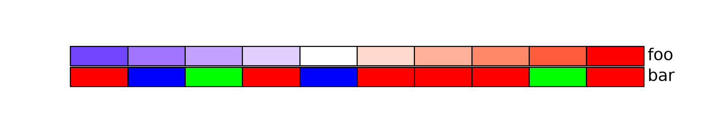
A simple annotation can also be a 2D matrix or
pandas.DataFrame whose columns share a single color scale.
Columns of the input DataFrame/matrix become stacked rows in a
column annotation (with DataFrame column names used as
individual row labels):
df_mat = pd.DataFrame({"a": rng.uniform(size=10), "b": rng.uniform(size=10)})
ha = HeatmapAnnotation(foo=df_mat)
ch.draw(ha, test=True)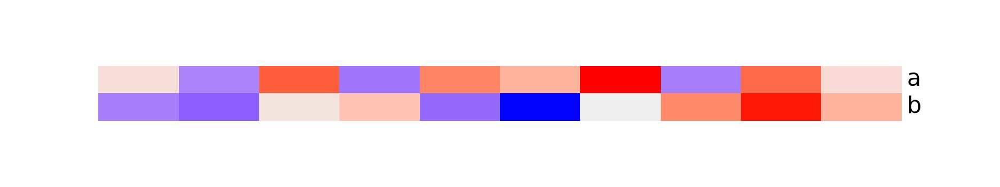
When an unnamed NumPy 2D array is passed, the annotation keyword name
(foo) is centered across the tracks:
ha = HeatmapAnnotation(foo=np.column_stack([rng.uniform(size=10), rng.uniform(size=10)]))
ch.draw(ha, test=True)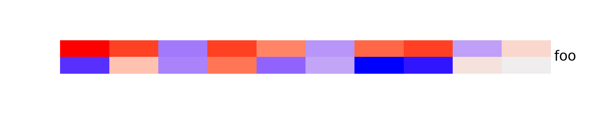
If you already hold an annotation table as a
pandas.DataFrame, pass it directly via
df=:
anno_df = pd.DataFrame({"foo": np.arange(1, 11), "bar": bars})
ha = HeatmapAnnotation(df=anno_df, col={"foo": col_fun, "bar": disc_col})
ch.draw(ha, test=True)
df= can be mixed with additional individual keyword
annotations (which are appended after the df columns):
ha = HeatmapAnnotation(
df=anno_df,
foo2=rng.standard_normal(10),
col={"foo": col_fun, "bar": disc_col},
)
ch.draw(ha, test=True)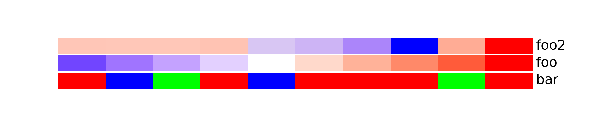
border=True draws an outer border around each annotation
track:
ha = HeatmapAnnotation(
foo=np.column_stack([np.arange(1, 11), np.arange(10, 0, -1)]),
bar=bars,
col={"foo": col_fun, "bar": disc_col},
border=True,
)
ch.draw(ha, test=True)
simple_anno_size controls the height (for column
annotations) or width (for row annotations) of each single
simple-annotation row/track:
from complexheatmap import unit
ha = HeatmapAnnotation(
foo=pd.DataFrame({"a": np.arange(1, 11), "b": np.arange(10, 0, -1)}),
bar=bars,
col={"foo": col_fun, "bar": disc_col},
simple_anno_size=unit(1, "cm"),
)
ch.draw(ha, test=True)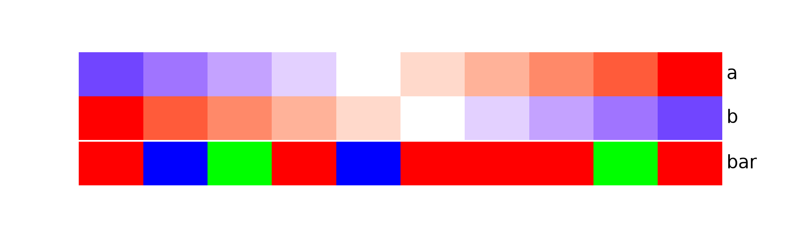
For multi-heatmap layouts, you can standardize simple annotation
thickness globally via ht_opt.simple_anno_size (see Change
parameters globally).
3.2 Simple annotation as an annotation function#
Complex annotations are built with anno_*() factory
functions, which return an AnnotationFunction object. When
passed inside HeatmapAnnotation() or
rowAnnotation(), every anno_*() function
automatically detects whether it is in a column or row annotation
environment—so you rarely need to specify which=
manually.
Simple annotations are created internally by
anno_simple(). Calling anno_simple() directly
does not generate legends automatically, though custom
legends can still be constructed manually (see Legends):
# Code only for demonstration
ha = HeatmapAnnotation(foo=np.arange(1, 11))
# Internally equivalent to:
ha = HeatmapAnnotation(foo=anno_simple(np.arange(1, 11)))The main advantage of calling anno_simple() explicitly
is adding point symbols or single-character markers (pch)
on top of the colored cells, styled via pt_gp and
pt_size:
from complexheatmap import anno_simple
ha = HeatmapAnnotation(
foo=anno_simple(np.arange(1, 11), pch=[1] * 10, pt_gp=gpar(col="red"), pt_size=unit(np.arange(1, 11), "mm"))
)
ch.draw(ha, test=True)
pch can be a numeric symbol vector:
ha = HeatmapAnnotation(foo=anno_simple(np.arange(1, 11), pch=list(range(1, 11))))
ch.draw(ha, test=True)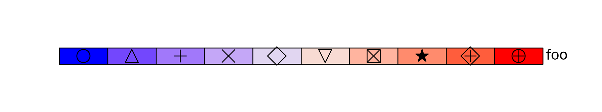
Or a vector of single-character labels:
ha = HeatmapAnnotation(foo=anno_simple(np.arange(1, 11), pch=rng.choice(["a", "b", "c"], 10).tolist()))
ch.draw(ha, test=True)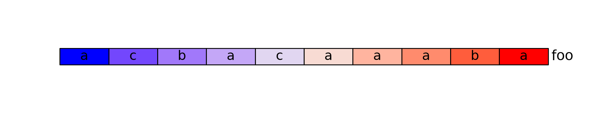
Entries set to None (or np.nan) leave that
cell unmarked:
ha = HeatmapAnnotation(foo=anno_simple(np.arange(1, 11), pch=[1, 2, 3, 4, None, 6, 7, 8, None, 10]))
ch.draw(ha, test=True)
When the input to anno_simple() is a 2D matrix,
pch can match either the columns, rows, or full 2D matrix
shape:
mat2 = np.column_stack([np.arange(1, 11), np.arange(10, 0, -1)])
# Matching matrix shape across columns
ha = HeatmapAnnotation(foo=anno_simple(mat2, pch=np.tile([1, 2], (10, 1))))
ch.draw(ha, test=True)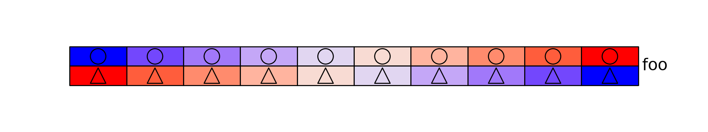
# Matching matrix rows
ha = HeatmapAnnotation(foo=anno_simple(mat2, pch=np.arange(1, 11)))
ch.draw(ha, test=True)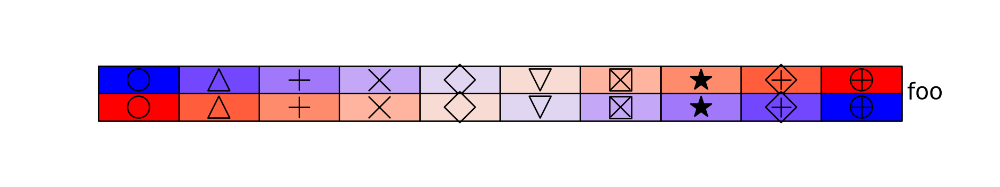
# Full 2D pch matrix with missing entries
pch_mat = np.arange(1, 21, dtype=object).reshape(10, 2)
pch_mat.ravel()[rng.choice(20, 10, replace=False)] = None
ha = HeatmapAnnotation(foo=anno_simple(mat2, pch=pch_mat))
ch.draw(ha, test=True)
Because anno_simple() does not emit legends
automatically, you can attach custom Legend() objects via
annotation_legend_list in ch.draw() (see Legends). Below, we map
-log10(pvalue) to color and overlay * for
p < 0.01:
from complexheatmap import Legend
pvalue = 10.0 ** (-rng.uniform(0, 3, 10))
is_sig = pvalue < 0.01
pch_sig = ["*" if s else None for s in is_sig]
pvalue_col_fun = colorRamp2([0, 2, 3], ["green", "white", "red"])
ha_pv = HeatmapAnnotation(
pvalue=anno_simple(-np.log10(pvalue), col=pvalue_col_fun, pch=pch_sig),
annotation_name_side="left",
)
ht_pv = Heatmap(rng.standard_normal((10, 10)), name="mat", top_annotation=ha_pv)
lgd_pvalue = Legend(title="p-value", col_fun=pvalue_col_fun, at=[0, 1, 2, 3], labels=["1", "0.1", "0.01", "0.001"])
lgd_sig = Legend(pch="*", type="points", labels=["< 0.01"])
ch.draw(ht_pv, annotation_legend_list=[lgd_pvalue, lgd_sig])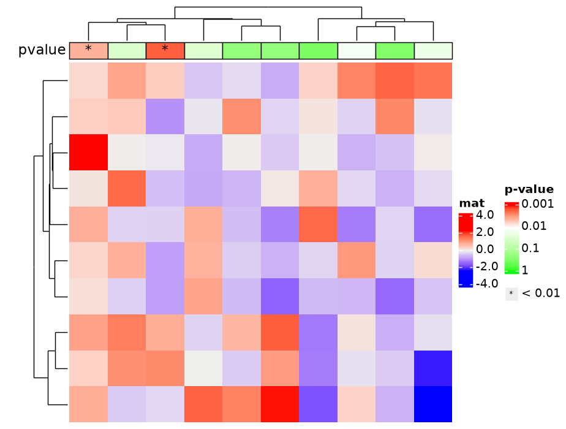
Inside anno_simple(),
height/width sets the total track size,
whereas simple_anno_size sets the thickness per row/column
of a multi-track matrix (ignored if
height/width is explicitly set):
ha1 = HeatmapAnnotation(foo=anno_simple(np.arange(1, 11), height=unit(2, "cm")))
ch.draw(ha1, test=True)
ha2 = HeatmapAnnotation(foo=anno_simple(mat2, simple_anno_size=unit(2, "cm")))
ch.draw(ha2, test=True)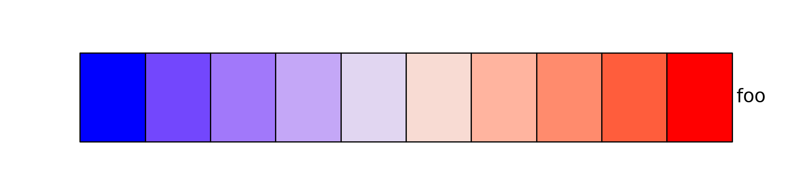

For all anno_*() functions introduced below,
configure the size of an individual annotation inside
anno_*() via width or
height, while
width/height/annotation_width/annotation_height
in HeatmapAnnotation() govern the combined multi-annotation
block.
# Code only for demonstration
anno_*(..., width=...)
anno_*(..., height=...)3.3 Empty annotation#
anno_empty() reserves a blank annotation region that you
can later populate using decorate_annotation() (see Heatmap Decoration):
from complexheatmap import anno_empty
ha = HeatmapAnnotation(foo=anno_empty(border=True))
ch.draw(ha, index=list(range(10)), test=True)
A common application is highlighting summary keywords for each
cluster slice beside a k-means-split heatmap. Note that
decorate_annotation("foo", slice=i) uses
1-based slice indices (1..4):
from complexheatmap import decorate_annotation, grid_rect, grid_text, max_text_width
def random_text(n):
letters = list("abcdefghijklmnopqrstuvwxyz")
return ["".join(rng.choice(letters, int(rng.integers(4, 11)))) for _ in range(n)]
text_list = [random_text(4) for _ in range(4)]
flat_txt = [w for grp in text_list for w in grp]
ha = rowAnnotation(foo=anno_empty(border=False, width=max_text_width(flat_txt) + unit(4, "mm")))
ht = Heatmap(rng.standard_normal((100, 10)), name="mat", row_km=4, right_annotation=ha)
ch.draw(ht)
for i in range(1, 5):
with decorate_annotation("foo", slice=i):
grid_rect(x=0, width=unit(2, "mm"), gp=gpar(fill=i, col=None), just="left")
grid_text("\n".join(text_list[i - 1]), x=unit(4, "mm"), just="left")
Note that this pattern can also be created directly with
anno_block() or anno_textbox() (Text box annotation).
You can also treat anno_empty() as a custom plotting
canvas, remembering to reorder your data vector by
column_order(ht) (0-based indices) before
plotting:
from complexheatmap import Viewport, column_order, grid_lines, grid_points, popViewport, pushViewport
ha_pts = HeatmapAnnotation(foo=anno_empty(border=True, height=unit(3, "cm")))
ht_pts = Heatmap(rng.standard_normal((10, 10)), name="mat", top_annotation=ha_pts)
res = ch.draw(ht_pts)
co = column_order(res)
value = rng.uniform(size=10)
with decorate_annotation("foo"):
x_pos = np.arange(1, 11)
val_ord = value[co]
pushViewport(Viewport(xscale=(0.5, 10.5), yscale=(0, 1)))
grid_lines([0.5, 10.5], [0.5, 0.5], gp=gpar(lty=2), default_units="native")
grid_points(
x_pos,
val_ord,
pch=16,
size=unit(2, "mm"),
gp=gpar(col=["red" if v > 0.5 else "blue" for v in val_ord]),
default_units="native",
)
ch.grid_yaxis(at=[0, 0.5, 1])
popViewport()
3.4 Block annotation#
anno_block() draws colored blocks aligned to split
heatmap slices—either as labeled group banners or as virtual plotting
panels for custom slice-level graphics.
3.4.1 Block for putting labels#
When rows or columns are split, anno_block() draws one
rectangle per slice:
from complexheatmap import anno_block
m10 = rng.standard_normal((10, 10))
ch.draw(
Heatmap(
m10,
name="mat",
top_annotation=HeatmapAnnotation(foo=anno_block(gp=gpar(fill=[2, 3, 4]))),
column_km=3,
)
)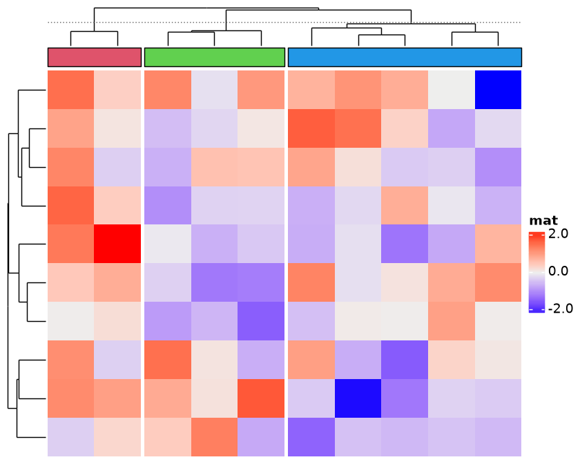
Add slice labels via labels and labels_gp
(matching the number of slices):
ch.draw(
Heatmap(
m10,
name="mat",
top_annotation=HeatmapAnnotation(
foo=anno_block(
gp=gpar(fill=[2, 3, 4]),
labels=["group1", "group2", "group3"],
labels_gp=gpar(col="white", fontsize=10),
)
),
column_km=3,
left_annotation=rowAnnotation(
foo=anno_block(
gp=gpar(fill=[2, 3, 4]),
labels=["group1", "group2", "group3"],
labels_gp=gpar(col="white", fontsize=10),
)
),
row_km=3,
)
)
To draw higher-level group banners spanning multiple slices,
reserve space above the slice blocks with
anno_empty(border=False), draw the heatmap, locate the
slice viewports with seekViewport(), and draw a spanning
rectangle and label inside "global":
mat2 = rng.standard_normal((50, 50))
split = np.repeat(np.arange(1, 6), 10)
ha = HeatmapAnnotation(
empty=anno_empty(border=False),
foo=anno_block(gp=gpar(fill=list(range(2, 7))), labels=list("ABCDE")),
)
ch.draw(Heatmap(mat2, name="mat2", column_split=split, top_annotation=ha, column_title=None))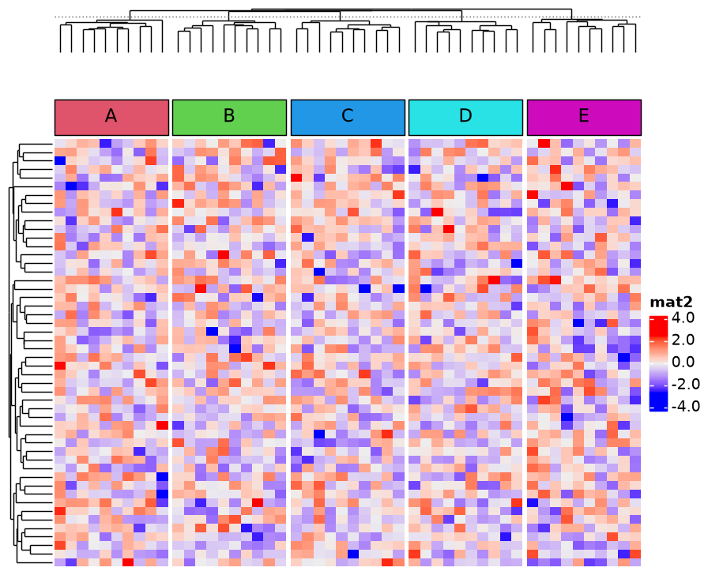
Every annotation slice viewport follows the naming pattern
annotation_{annotation_name}_{slice_index}
(1-based slice_index). You can inspect all
registered viewport names with list_components() and
measure their coordinates in millimeters relative to
"global" via seekViewport():
from complexheatmap import seekViewport
vp1 = seekViewport("annotation_empty_1")
vp2 = seekViewport("annotation_empty_3")
vp_glob = seekViewport("global")
x0 = unit(vp1.x0_mm - vp_glob.x0_mm, "mm")
y0 = unit(vp1.y0_mm - vp_glob.y0_mm, "mm")
w = unit((vp2.x0_mm + vp2.w_mm) - vp1.x0_mm, "mm")
h = unit((vp2.y0_mm + vp2.h_mm) - vp1.y0_mm, "mm")
grid_rect(x0, y0, width=w, height=h, just=["left", "bottom"], gp=gpar(fill="red"))
grid_text("group 1", x=x0 + w * 0.5, y=y0 + h * 0.5, gp=gpar(col="white"))
Wrapping this into a helper group_block_anno() lets you
label arbitrary groups of consecutive slices cleanly:
def group_block_anno(group, empty_anno, gp_box=None, label=None, label_gp=None):
vp1 = seekViewport(f"annotation_{empty_anno}_{min(group)}")
vp2 = seekViewport(f"annotation_{empty_anno}_{max(group)}")
vp_glob = seekViewport("global")
x0 = unit(vp1.x0_mm - vp_glob.x0_mm, "mm")
y0 = unit(vp1.y0_mm - vp_glob.y0_mm, "mm")
w = unit((vp2.x0_mm + vp2.w_mm) - vp1.x0_mm, "mm")
h = unit((vp2.y0_mm + vp2.h_mm) - vp1.y0_mm, "mm")
grid_rect(x0, y0, width=w, height=h, just=["left", "bottom"], gp=gp_box or gpar())
if label is not None:
grid_text(label, x=x0 + w * 0.5, y=y0 + h * 0.5, gp=label_gp or gpar())
ha = HeatmapAnnotation(
empty=anno_empty(border=False, height=unit(8, "mm")),
foo=anno_block(gp=gpar(fill=list(range(2, 7))), labels=list("ABCDE")),
)
ch.draw(Heatmap(mat2, name="mat2", column_split=split, top_annotation=ha, column_title=None))
group_block_anno([1, 2, 3], "empty", gp_box=gpar(fill="red"), label="group 1", label_gp=gpar(col="white"))
group_block_anno([4, 5], "empty", gp_box=gpar(fill="blue"), label="group 2", label_gp=gpar(col="white"))
3.4.2 Blocks as plotting regions#
When panel_fun is passed to anno_block(),
each block acts as an independent plotting viewport.
panel_fun(index, levels) receives two arguments:
index: 0-based row/column indices belonging to the current slice.levels: the split level(s) identifying the slice (a scalar or sequence when combining multiple split variables such asrow_km+row_split).
When panel_fun is provided, default fill/label
parameters on anno_block() are ignored:
col_map = {"1": "red", "2": "blue", "A": "green", "B": "orange"}
def _pf(index, levels):
lv = [str(levels)] if isinstance(levels, str) else [str(v) for v in levels]
grid_rect(gp=gpar(fill=col_map.get(lv[-1], "grey"), col="black"))
txt = ",".join(lv) + f"\n{len(index)} rows"
grid_text(txt, 0.5, 0.5, rot=0, gp=gpar(col=col_map.get(lv[0], "black")))
ch.draw(
Heatmap(m10, name="mat", row_km=2, row_split=rng.choice(["A", "B"], 10))
+ rowAnnotation(foo=anno_block(panel_fun=_pf, width=unit(3, "cm")))
)
align_to lets you draw blocks only for selected subsets
of contiguous 0-based indices (either alongside
row_split or on an unclustered heatmap):
sp_ab = rng.choice(["A", "B"], 10)
align_a = {"A": [i for i, v in enumerate(sp_ab) if v == "A"]}
def _pf_count(index, nm):
grid_rect()
grid_text(f"{len(index)} rows", 0.5, 0.5)
ch.draw(
Heatmap(m10, name="mat", row_split=sp_ab)
+ rowAnnotation(foo=anno_block(align_to=align_a, panel_fun=_pf_count, width=unit(3, "cm")))
)
Even without row_split, align_to can target
any contiguous 0-based row range when
cluster_rows=False:
ch.draw(
Heatmap(m10, name="mat", cluster_rows=False)
+ rowAnnotation(foo=anno_block(align_to={"A": [1, 2, 3], "B": [6, 7, 8]}, panel_fun=_pf_count, width=unit(3, "cm")))
)
3.5 Image annotation#
anno_image() places local image files (PNG, JPEG, TIFF,
SVG, etc., or NumPy RGBA arrays) into each annotation cell:
from complexheatmap import anno_image
ha = HeatmapAnnotation(foo=anno_image(icon_paths))
ch.draw(ha, test=True)
Use gp to assign cell background colors (visible behind
transparent pixels) and borders:
ha = HeatmapAnnotation(foo=anno_image(icon_paths, gp=gpar(fill=list(range(1, 11)), col="black")))
ch.draw(ha, test=True)border sets the outer border color of the annotation
track, and space adds inner padding around each image:
ch.draw(HeatmapAnnotation(foo=anno_image(icon_paths, border="red")), test=True)
ch.draw(HeatmapAnnotation(foo=anno_image(icon_paths, space=unit(3, "mm"))), test=True)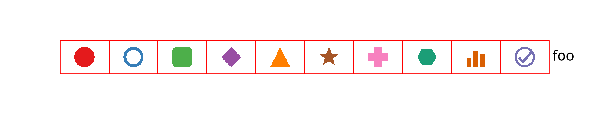
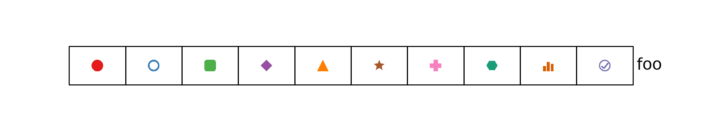
Elements set to "" or None leave those
cells blank:
partial = ["", ""] + list(icon_paths[2:])
ch.draw(HeatmapAnnotation(foo=anno_image(partial)), test=True)
3.6 Points annotation#
anno_points() plots numeric values as scatter points. It
accepts a 1D vector or a 2D matrix (where rows correspond to
observations along the heatmap axis and columns form multiple point
series styled by pch, size, and
gp):
from complexheatmap import anno_points
ch.draw(HeatmapAnnotation(foo=anno_points(rng.uniform(size=10))), test=True)
ch.draw(HeatmapAnnotation(foo=anno_points(rng.uniform(size=(10, 2)), pch=[1, 2], gp=gpar(col=[2, 3]))), test=True)

ylim fixes the data axis range, extend adds
axis padding, axis toggles axis visibility, and
axis_param customizes ticks, labels, side, and rotation.
Inspect default axis settings with
default_axis_param():
from complexheatmap import default_axis_param
default_axis_param("column")
# {'at': None, 'labels': None, 'labels_rot': 0, 'gp': {'fontsize': 8}, 'side': 'left', 'facing': 'outside', 'direction': 'normal'}Override any subset of axis_param:
ha = HeatmapAnnotation(
foo=anno_points(
rng.uniform(size=10),
ylim=(0, 1),
axis_param={"side": "right", "at": [0, 0.5, 1], "labels": ["zero", "half", "one"]},
)
)
ch.draw(ha, test=True)
For row annotations, you can rotate axis labels with
labels_rot:
ha = rowAnnotation(
foo=anno_points(
rng.uniform(size=10),
which="row",
ylim=(0, 1),
width=unit(2, "cm"),
axis_param={"side": "bottom", "at": [0, 0.5, 1], "labels": ["zero", "half", "one"], "labels_rot": 45},
)
)
ch.draw(ha, test=True)
Axis configuration via axis and
axis_param works identically across all other axis-bearing
annotation functions.
Control the annotation height (or width for row annotations) directly
inside anno_points() (default height is 1 cm /
5 mm depending on context):
ha = HeatmapAnnotation(foo=anno_points(rng.uniform(size=10), height=unit(2, "cm")))
ch.draw(ha, test=True)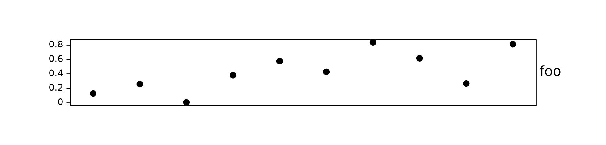
3.7 Line annotation#
anno_lines() connects sequential values with line
segments and accepts either a 1D vector or a 2D matrix:
from complexheatmap import anno_lines
ch.draw(HeatmapAnnotation(foo=anno_lines(rng.uniform(size=10))), test=True)
mat_l = np.column_stack([np.tile(np.arange(1, 6), 2), np.tile(np.arange(5, 0, -1), 2)])
ch.draw(
HeatmapAnnotation(
foo=anno_lines(mat_l, gp=gpar(col=[2, 3]), add_points=True, pt_gp=gpar(col=[5, 6]), pch=[1, 16])
),
test=True,
)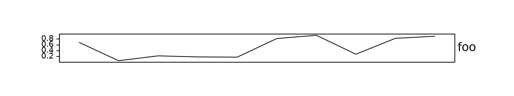

Setting smooth=True fits a smoothed curve (enabling
add_points=True by default). Keep in mind that smoothing
fits along the displayed (potentially clustered)
order:
ch.draw(HeatmapAnnotation(foo=anno_lines(rng.uniform(size=10), smooth=True)), test=True)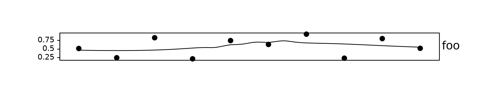
As with anno_points(), pass height= or
width= directly to anno_lines() to resize
it.
3.8 Barplot annotation#
anno_barplot() represents values as vertical or
horizontal bars and shares ylim, axis, and
axis_param with anno_points():
ch.draw(HeatmapAnnotation(foo=anno_barplot(np.arange(1, 11))), test=True)
bar_width sets the bar width as a fraction of the cell
width (from 0 to 1), and gp sets
fill and border colors:
ch.draw(HeatmapAnnotation(foo=anno_barplot(np.arange(1, 11), bar_width=1)), test=True)
ch.draw(HeatmapAnnotation(foo=anno_barplot(np.arange(1, 11), gp=gpar(fill=list(range(1, 11))))), test=True)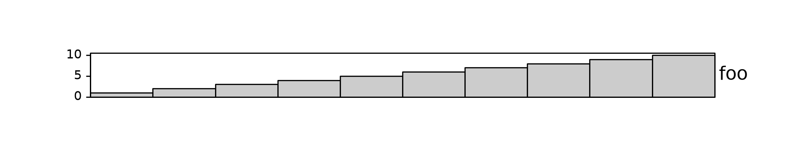

baseline sets where bars originate—either
"min" or a numeric baseline such as 0:
ch.draw(HeatmapAnnotation(foo=anno_barplot(np.arange(-5, 6), baseline="min")), test=True)
ch.draw(HeatmapAnnotation(foo=anno_barplot(np.arange(-5, 6), baseline=0)), test=True)

When given a 2D matrix, anno_barplot() draws stacked
bars by default, with gp elements matching the matrix
columns:
mat_b = np.column_stack([np.arange(1, 11), np.arange(10, 0, -1)])
ch.draw(HeatmapAnnotation(foo=anno_barplot(mat_b)), test=True)
ch.draw(HeatmapAnnotation(foo=anno_barplot(mat_b, gp=gpar(fill=[2, 3], col=[2, 3]))), test=True)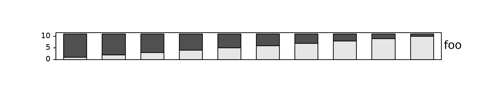
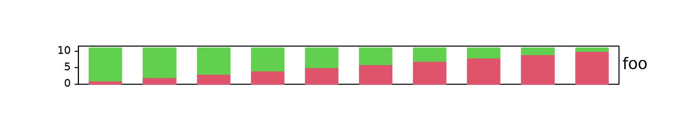
A common use case is visualizing row-normalized proportions:
m_prop = rng.uniform(size=(10, 4))
m_prop = m_prop / m_prop.sum(axis=1, keepdims=True)
ch.draw(
HeatmapAnnotation(foo=anno_barplot(m_prop, gp=gpar(fill=[2, 3, 4, 5]), bar_width=1, height=unit(6, "cm"))),
test=True,
)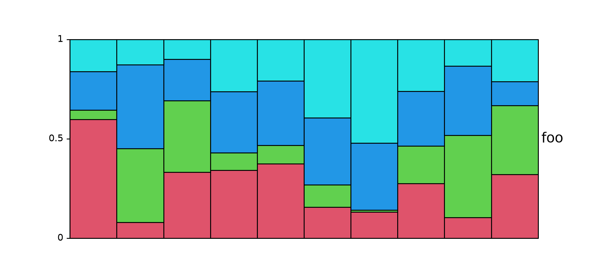
For left-side row barplots, set
axis_param={"direction": "reverse"} so bars grow leftward
from the heatmap boundary:
ha_rev = (
rowAnnotation(
axis_reverse=anno_barplot(
m_prop, gp=gpar(fill=[2, 3, 4, 5]), axis_param={"direction": "reverse"}, bar_width=1, width=unit(4, "cm")
)
)
+ rowAnnotation(axis_normal=anno_barplot(m_prop, gp=gpar(fill=[2, 3, 4, 5]), bar_width=1, width=unit(4, "cm")))
)
ch.draw(ha_rev, ht_gap=unit(4, "mm"))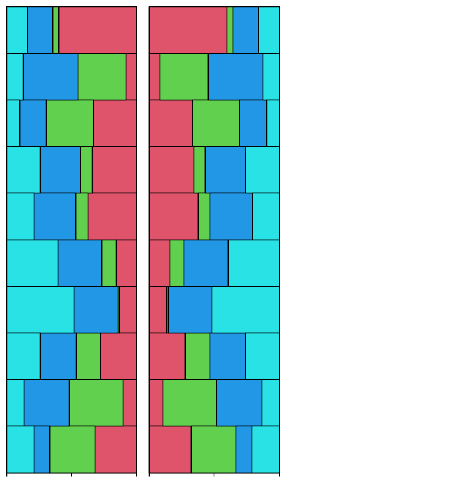
Pass add_numbers=True to print each bar’s value next to
it:
ch.draw(HeatmapAnnotation(foo=anno_barplot(np.arange(1, 11), add_numbers=True, height=unit(1, "cm"))), test=True)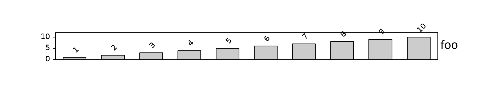
For multi-column inputs, beside=True places grouped bars
side by side, and attach=True eliminates the inner gap
between bars in the same group:
ch.draw(HeatmapAnnotation(foo=anno_barplot(mat_b, beside=True)), test=True)
ch.draw(HeatmapAnnotation(foo=anno_barplot(mat_b, beside=True, attach=True)), test=True)
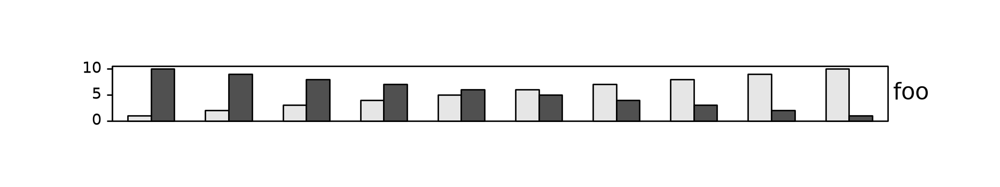
3.9 Boxplot annotation#
anno_boxplot() summarizes distributions across columns
(for column annotations) or rows (for row annotations) from a matrix or
list of vectors, and works best when the number of heatmaps columns/rows
is modest:
from complexheatmap import anno_boxplot
rng_bp = np.random.default_rng(12345)
m = rng_bp.standard_normal((10, 10))
ch.draw(HeatmapAnnotation(foo=anno_boxplot(m, height=unit(4, "cm"))), test=True)
ch.draw(HeatmapAnnotation(foo=anno_boxplot(m, height=unit(4, "cm"), gp=gpar(fill=list(range(1, 11))))), test=True)
ch.draw(HeatmapAnnotation(foo=anno_boxplot(m, height=unit(4, "cm"), box_width=0.9, outline=False)), test=True)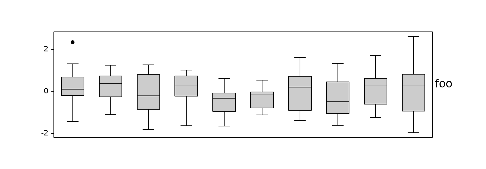

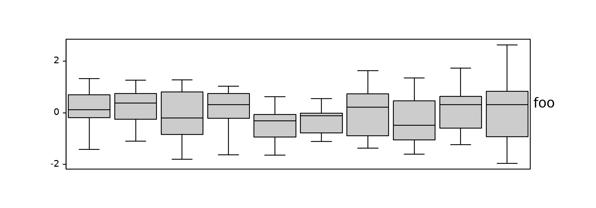
anno_boxplot() renders one boxplot per column or row.
See Add
multiple boxplots for single row for drawing multiple boxplots in a
single row, and Zoom/link annotation for
summarizing groups of rows.
3.10 Histogram annotation#
anno_histogram() is usually placed as a row annotation
and computes histograms per row (or per column for column annotations)
from a matrix or list of vectors:
from complexheatmap import anno_histogram
m = rng.standard_normal((10, 100))
ch.draw(rowAnnotation(foo=anno_histogram(m)), test=True)
ch.draw(rowAnnotation(foo=anno_histogram(m, n_breaks=20)), test=True)
ch.draw(rowAnnotation(foo=anno_histogram(m, gp=gpar(fill=list(range(1, 11))))), test=True)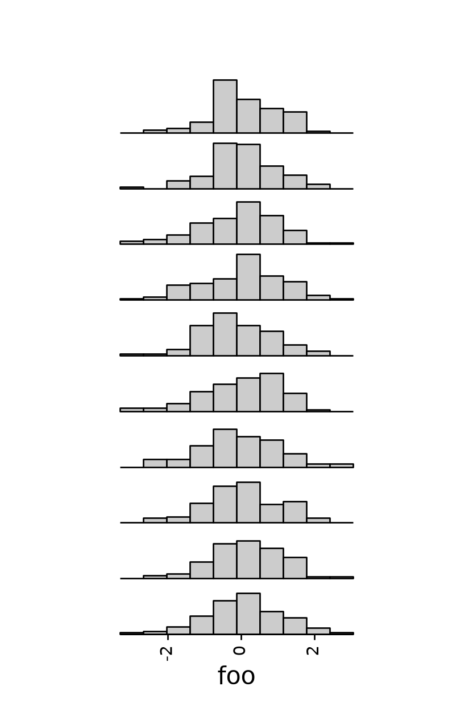


3.11 Density annotation#
anno_density() displays kernel density estimates for
each row or column:
from complexheatmap import anno_density
ch.draw(rowAnnotation(foo=anno_density(m)), test=True)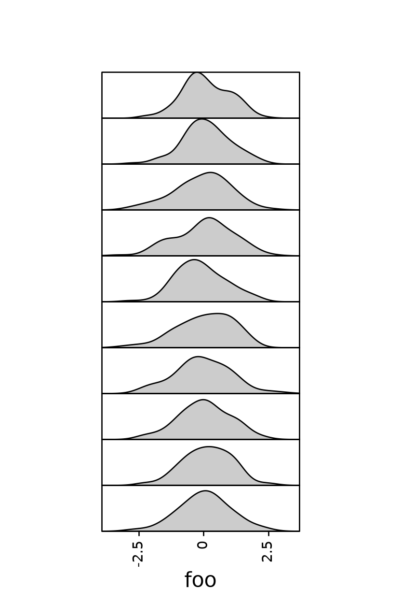
Increase joyplot_scale with semi-transparent fill to
create overlapping ridge/joyplot peaks, or set
type="violin" for violin plots:
ch.draw(rowAnnotation(foo=anno_density(m, joyplot_scale=2, gp=gpar(fill="#CCCCCC80"))), test=True)
ch.draw(rowAnnotation(foo=anno_density(m, type="violin", gp=gpar(fill=list(range(1, 11))))), test=True)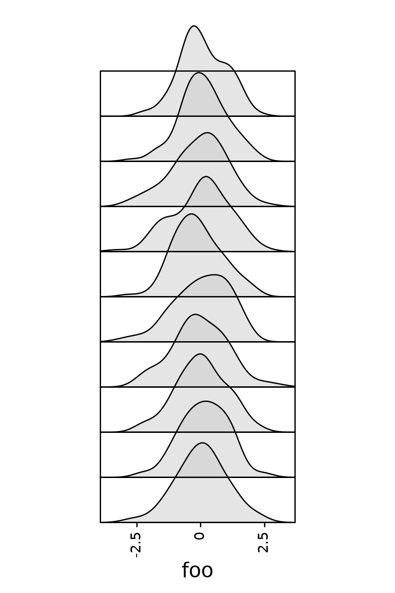

When there are many rows, type="heatmap" encodes each
density profile as a color strip (customizable via
heatmap_colors). See also densityHeatmap() in
Density
heatmap:
m2 = rng.standard_normal((50, 10))
ch.draw(rowAnnotation(foo=anno_density(m2, type="heatmap", width=unit(6, "cm"))), test=True)
ch.draw(
rowAnnotation(foo=anno_density(m2, type="heatmap", width=unit(6, "cm"), heatmap_colors=["white", "orange"])),
test=True,
)

3.12 Joyplot annotation#
anno_joyplot() renders stacked ridgeline curves from
either:
- A 2D matrix (always interpreted column-wise, with row indices
0..nrow-1asx), or - A list of 2-column
DataFrames withxandycoordinates.
from scipy.stats import gaussian_kde
from complexheatmap import anno_joyplot
m1 = rng.standard_normal((100, 10))
gx = np.linspace(-4, 4, 200)
lt1 = [pd.DataFrame({"x": gx, "y": gaussian_kde(m1[:, j])(gx)}) for j in range(m1.shape[1])]
ch.draw(
rowAnnotation(foo=anno_joyplot(lt1, width=unit(4, "cm"), gp=gpar(fill=list(range(1, 11))), transparency=0.75)),
test=True,
)
Set gp=gpar(fill=None) and increase scale
to draw crisp overlapping outlines:
m2 = rng.standard_normal((100, 50))
lt2 = [pd.DataFrame({"x": gx, "y": gaussian_kde(m2[:, j])(gx)}) for j in range(m2.shape[1])]
ch.draw(rowAnnotation(foo=anno_joyplot(lt2, width=unit(4, "cm"), gp=gpar(fill=None), scale=4)), test=True)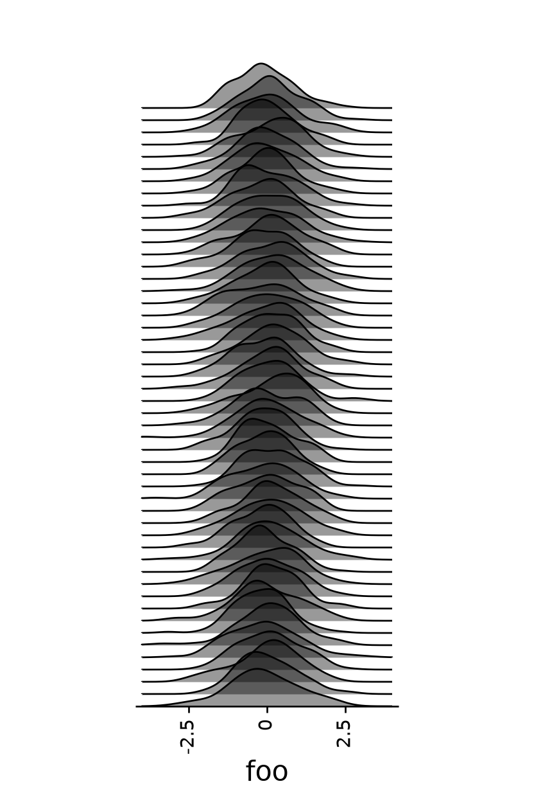
3.13 Horizon chart annotation#
anno_horizon() draws compact horizon charts (row
annotations only) using the same input structure as
anno_joyplot(), normalizing each track by
x / max(abs(x)):
from complexheatmap import anno_horizon
lt = [np.cumprod(1 + rng.uniform(-x / 100.0, x / 100.0, 1000)) - 1.0 for x in range(1, 21)]
ch.draw(rowAnnotation(foo=anno_horizon(lt)), test=True)
Customize positive/negative fills globally or per track via
pos_fill and neg_fill in gpar(),
control negative reflection via negative_from_top, and add
spacing via gap:
ch.draw(rowAnnotation(foo=anno_horizon(lt, gp=gpar(pos_fill="orange", neg_fill="darkgreen"))), test=True)
ch.draw(
rowAnnotation(
foo=anno_horizon(
lt,
gp=gpar(pos_fill=np.repeat(["orange", "red"], 10), neg_fill=np.repeat(["darkgreen", "blue"], 10)),
)
),
test=True,
)
ch.draw(rowAnnotation(foo=anno_horizon(lt, negative_from_top=True)), test=True)
ch.draw(rowAnnotation(foo=anno_horizon(lt, gap=unit(1, "mm"))), test=True)


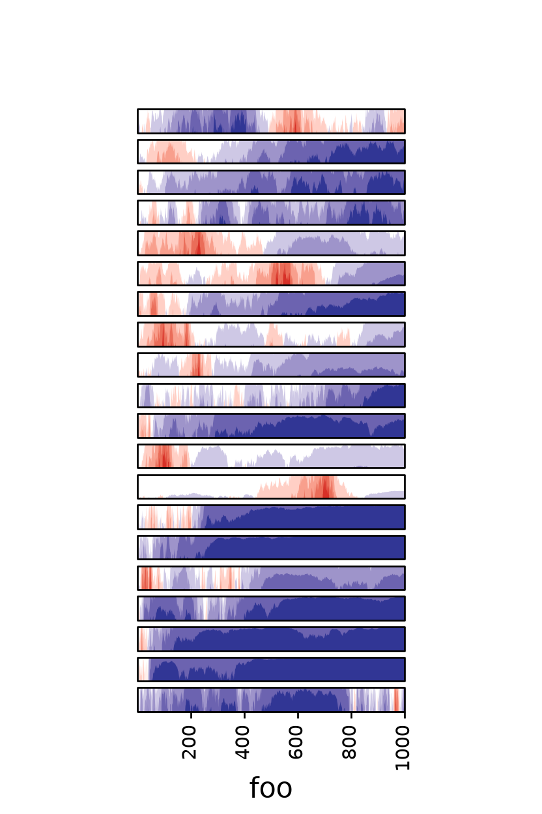
3.14 Text annotation#
anno_text() draws text labels aligned to rows or
columns, styled via gp, positioned via
location and just, and rotated via
rot:
from complexheatmap import anno_text
month_names = [
"January", "February", "March", "April", "May", "June",
"July", "August", "September", "October", "November", "December",
]
ch.draw(rowAnnotation(foo=anno_text(month_names, gp=gpar(fontsize=[i + 5 for i in range(12)]))), test=True)
ch.draw(
rowAnnotation(
foo=anno_text(month_names, location=1, rot=30, just="right", gp=gpar(fontsize=[i + 5 for i in range(12)]))
),
test=True,
)
ch.draw(rowAnnotation(foo=anno_text(month_names, location=0.5, just="center")), test=True)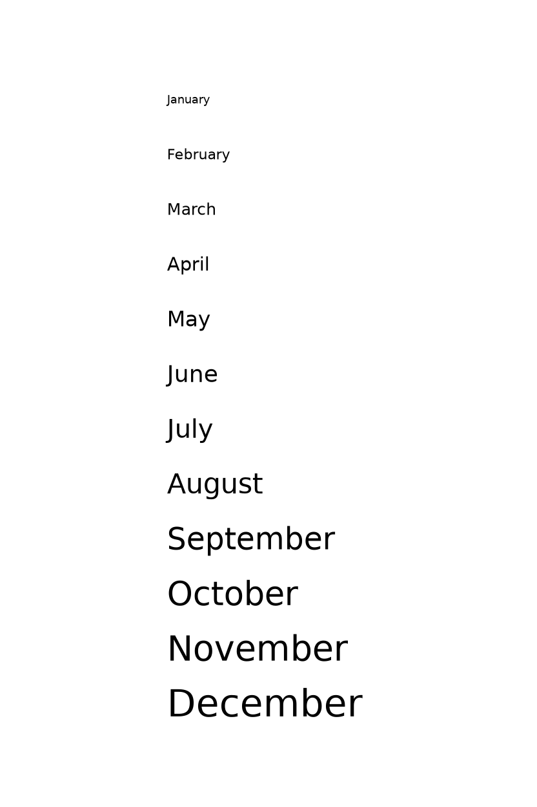
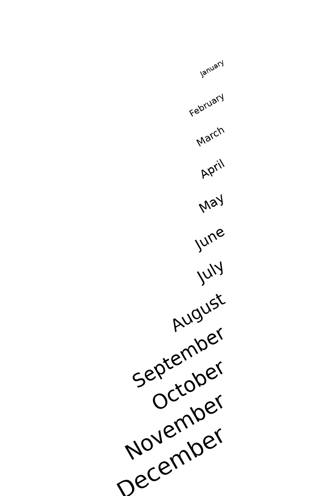

location and just are automatically adapted
when attached to a heatmap margin (left-aligned on the right margin,
right-aligned on the left margin), and width/height are automatically
measured from text extents. Add background boxes via fill,
col, and border inside
gpar():
ch.draw(
rowAnnotation(
foo=anno_text(
month_names,
location=0.5,
just="center",
gp=gpar(fill=np.repeat([2, 3, 4], 4), col="white", border="black"),
width=max_text_width(month_names) * 1.2,
)
),
test=True,
)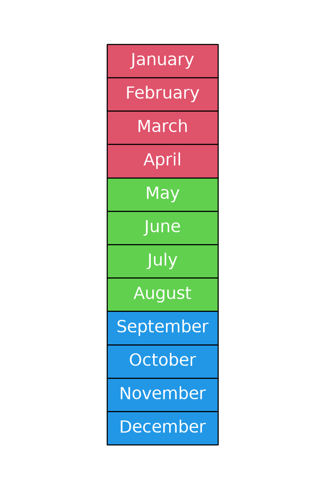
Rich inline text (**bold**, *italic*,
<br>,
<span style='color:...'>...</span>) is
supported via gt_render() (see Rich text with
gt_render):
from complexheatmap import gt_render
rich_txt = [
f"<span style='color:red'>**{ch_l}**</span> *{ch_l.lower()}* <span style='color:blue'>{ch_l}</span>"
for ch_l in "ABCDEFGHIJ"
]
ch.draw(
rowAnnotation(
foo=anno_text(
gt_render(rich_txt, align_widths=True, r=unit(2, "pt"), padding=unit([2, 2, 2, 2], "pt")),
gp=gpar(box_col="blue", box_lwd=2),
just="right",
location=unit(1, "npc"),
)
),
test=True,
)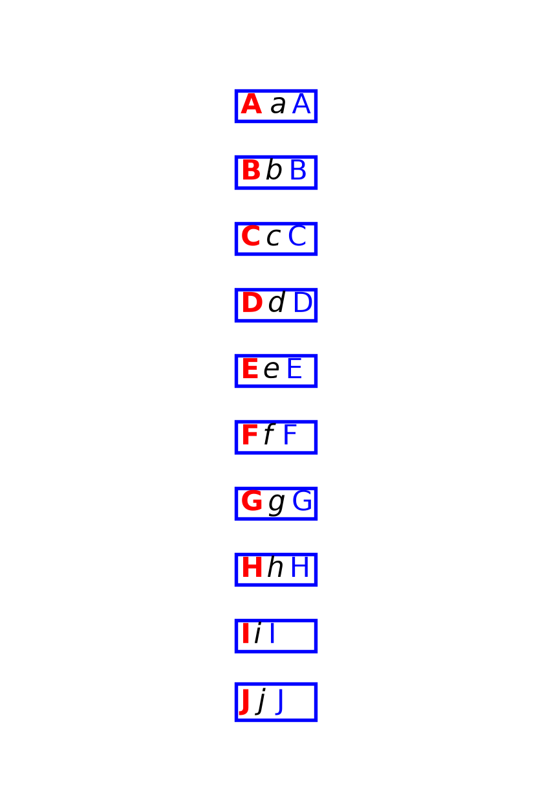
Unlike other annotations, anno_text() hides its
annotation name by default; enable it with
show_name=True:
m = rng.standard_normal((10, 10))
ch.draw(
Heatmap(m)
+ rowAnnotation(
month=anno_text(month_names[:10], just="center", location=unit(0.5, "npc"), show_name=True),
annotation_name_rot=0,
)
)
3.15 Numeric labels annotation#
anno_numeric() combines formatted numbers with
proportional horizontal background bars (row annotations only):
from complexheatmap import anno_numeric
x = np.round(rng.uniform(size=10), 3)
idx = list(range(10))
ch.draw(rowAnnotation(numeric=anno_numeric(x), annotation_name_rot=0), index=idx, test=True)
ch.draw(rowAnnotation(numeric=anno_numeric(x, bg_gp=gpar(fill="orange", col="black")), annotation_name_rot=0), index=idx, test=True)
ch.draw(
rowAnnotation(numeric=anno_numeric(x, bg_gp=gpar(fill="orange", col="black"), align_to="right"), annotation_name_rot=0),
index=idx,
test=True,
)
ch.draw(
rowAnnotation(numeric=anno_numeric(x, labels_format=lambda v: [f"{val * 100:.2f}%" for val in v]), annotation_name_rot=0),
index=idx,
test=True,
)

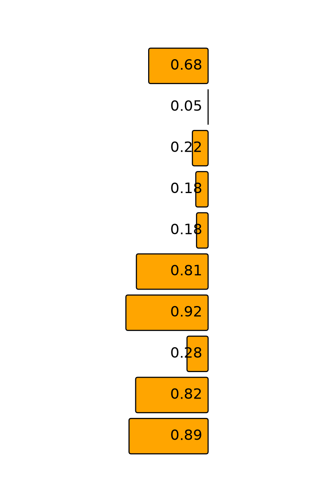
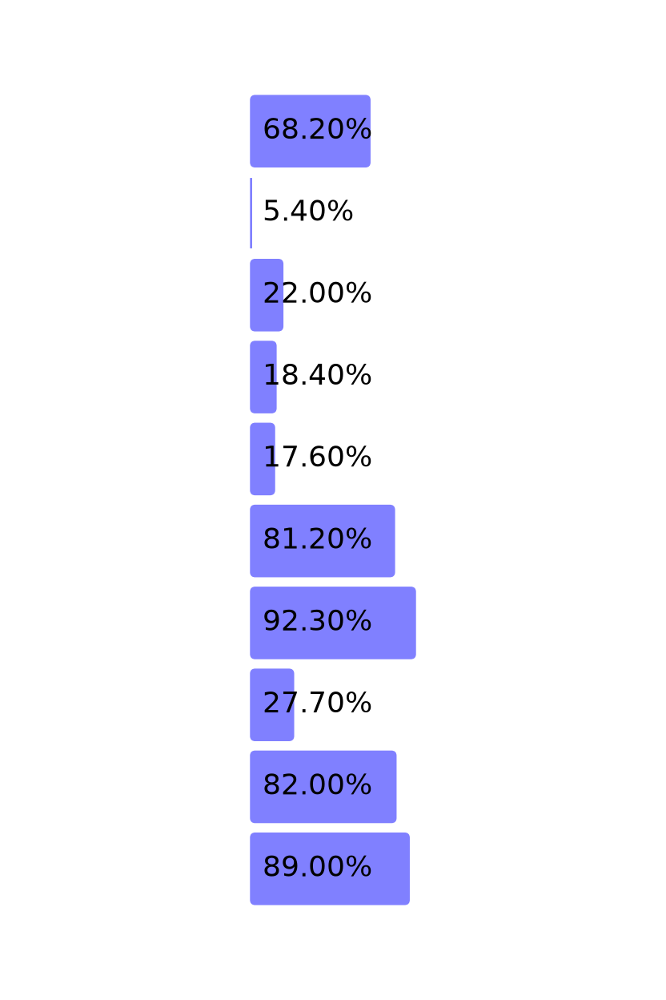
For vectors containing both negative and positive values,
anno_numeric() centers bars around 0, and
bg_gp accepts 2-element lists (or per-observation vectors)
styling negative vs. positive values:
x_div = np.round(rng.uniform(-1, 1, 10), 3)
div_cols = ["green" if v < 0 else "red" for v in x_div]
ch.draw(rowAnnotation(numeric=anno_numeric(x_div, bg_gp=gpar(fill=div_cols, col=div_cols)), annotation_name_rot=0), index=idx, test=True)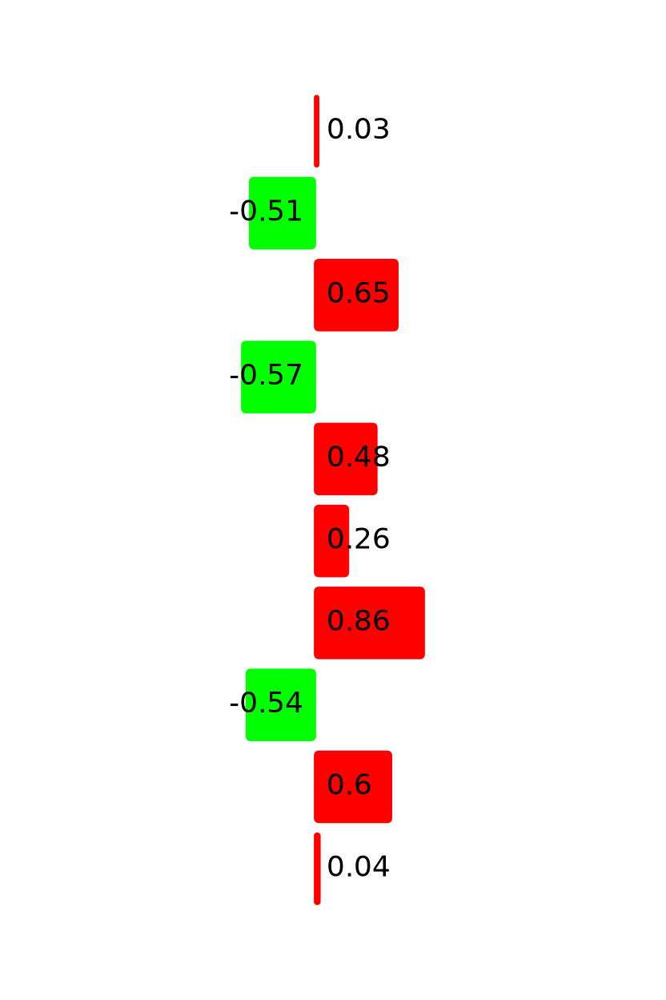
To plot p-values on a -log10 bar scale while keeping
scientific notation labels, use x_convert and
labels_format:
x_pv = 10.0 ** (-rng.uniform(1, 6, 10))
ch.draw(
rowAnnotation(
pvalue=anno_numeric(
x_pv,
rg=(float(x_pv.min()), 1.0),
x_convert=lambda v: -np.log10(v),
labels_format=lambda v: [f"{val:.2e}" for val in v],
),
annotation_name_rot=0,
),
index=idx,
test=True,
)
3.16 Completely customized annotation#
anno_customize() takes a categorical vector and a
dictionary graphics mapping each category level to a
drawing callback (x, y, w, h) giving the cell center and
size:
from PIL import Image
from complexheatmap import anno_customize, grid_raster
x = ["a", "a", "a", "b", "b", "b", "c", "c", "d", "d"]
icon_arr = np.asarray(Image.open(icon_path).convert("RGBA"))
graphics = {
"a": lambda px, py, w, h: grid_rect(px, py, w * 0.8, h * 0.33, gp=gpar(fill="red")),
"b": lambda px, py, w, h: grid_text("A", px, py, gp=gpar(col="darkgreen")),
"c": lambda px, py, w, h: grid_points(px, py, gp=gpar(col="orange"), pch=16),
"d": lambda px, py, w, h: grid_raster(
icon_arr, px, py, width=unit(0.8, "snpc"), height=unit(0.8, "snpc") * icon_arr.shape[0] / icon_arr.shape[1]
),
}
m = rng.standard_normal((10, 10))
ch.draw(
Heatmap(
m,
name="mat",
top_annotation=HeatmapAnnotation(foo=anno_customize(x, graphics=graphics)),
right_annotation=rowAnnotation(bar=anno_customize(x, graphics=graphics)),
)
)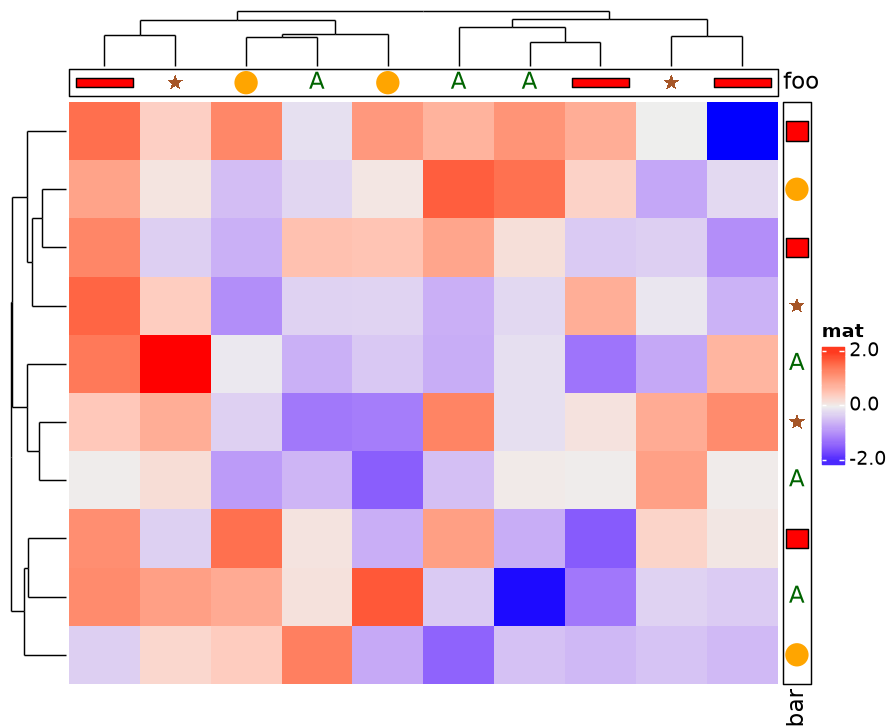
Reordering and row/column splitting automatically propagate to
anno_customize():
ch.draw(
Heatmap(
m,
name="mat",
top_annotation=HeatmapAnnotation(foo=anno_customize(x, graphics=graphics)),
right_annotation=rowAnnotation(bar=anno_customize(x, graphics=graphics)),
column_split=x,
row_split=x,
)
)
Because Legend() also accepts graphics=,
you can construct matching custom legends directly (see Legends):
ht = Heatmap(m, name="mat", top_annotation=HeatmapAnnotation(foo=anno_customize(x, graphics=graphics)))
lgd = Legend(title="foo", at=list(graphics.keys()), graphics=graphics)
ch.draw(ht, annotation_legend_list=lgd)
3.17 Mark annotation#
anno_mark() highlights selected rows or columns with
connector lines leading to non-overlapping text labels. at
expects 0-based integer indices into the original
matrix, and labels provides their display strings.
When splitting rows (row_km or row_split),
concatenating with + ha renders each slice’s marks cleanly
in its own slice viewport:
from complexheatmap import anno_mark
m = pd.DataFrame(rng.standard_normal((100, 10)), index=[str(i) for i in range(1, 101)])
ha = rowAnnotation(foo=anno_mark(at=[0, 1, 2, 3, 19, 59, 96, 97, 98, 99], labels=month_names[:10]))
ht1 = Heatmap(m, name="mat", cluster_rows=False, row_names_side="left", row_names_gp=gpar(fontsize=4)) + ha
ht2 = Heatmap(m, name="mat", cluster_rows=False, row_names_side="left", row_names_gp=gpar(fontsize=4), row_km=4) + ha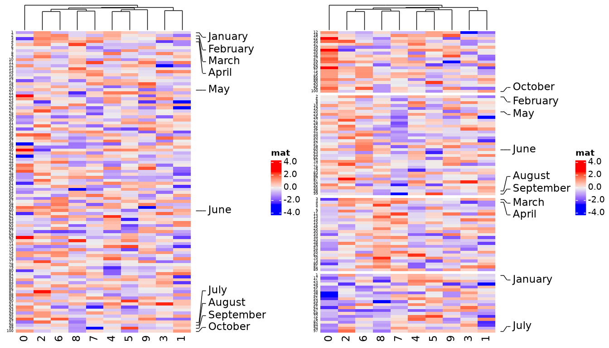
Because anno_mark() computes label coordinates relative
to the physical device dimensions, always pass matching
width_in and height_in when capturing with
grid_grabExpr() (see Capturing
heatmaps with grid_grabExpr).
3.18 Zoom/link annotation#
anno_link() (alias anno_zoom()) links
contiguous groups of rows or columns to dedicated plotting boxes via
trapezoidal ribbons:
align_to: either a dictionary mapping group names to 0-based index lists (recommended when combining withrow_splitand+ rowAnnotation(...)), a list of index lists, or a categorical vector on unsplit heatmaps.panel_fun(index, nm): callback drawing inside each box, receiving the 0-based observation indicesindexand optional group namenm.size: box height/width—either numeric relative weights or explicitUnitsizes.gap:Unitspacing between adjacent boxes.
from complexheatmap import anno_link, grid_boxplot
m = rng.standard_normal((100, 10))
subgroup = rng.choice(["a", "b", "c"], 100, p=[1 / 16, 5 / 16, 10 / 16])
rg = (float(m.min()), float(m.max()))
def panel_fun(index, nm):
pushViewport(Viewport(xscale=rg, yscale=(0, 2)))
grid_rect()
ch.grid_xaxis(gp=gpar(fontsize=8))
grid_boxplot(m[index, :].ravel(), pos=1, direction="horizontal")
popViewport()
align_cat = {k: [i for i, v in enumerate(subgroup) if v == k] for k in ("a", "b", "c")}
anno1 = anno_link(align_to=align_cat, which="row", panel_fun=panel_fun, size=unit(1.5, "cm"), gap=unit(1, "cm"), width=unit(4, "cm"))
ch.draw(Heatmap(m, name="mat", row_split=subgroup) + rowAnnotation(foo=anno1))
To annotate only a subset of groups (e.g., "a" and
"b"), pass only those keys in align_to:
align_sub = {k: [i for i, v in enumerate(subgroup) if v == k] for k in ("a", "b")}
anno2 = anno_link(align_to=align_sub, which="row", panel_fun=panel_fun, size=unit(1.5, "cm"), gap=unit(1, "cm"), width=unit(4, "cm"))
ch.draw(Heatmap(m, name="mat", row_split=subgroup) + rowAnnotation(foo=anno2))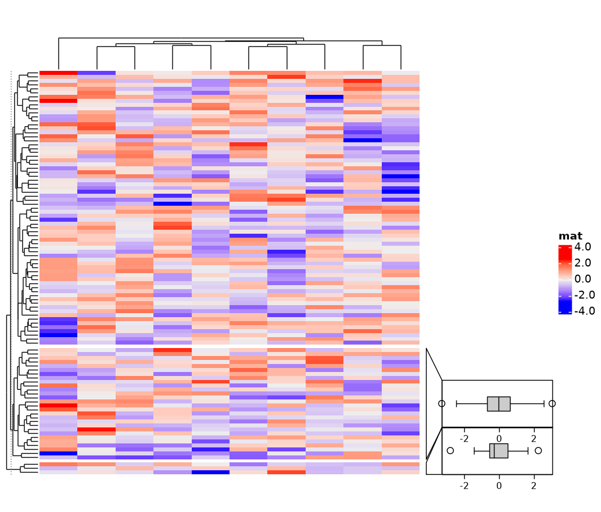
anno_link() works without row_split too,
provided the target 0-based indices are contiguous in
the heatmap (for example, when cluster_rows=False):
anno3 = anno_link(align_to=[list(range(20))], which="row", panel_fun=panel_fun, size=unit(2, "cm"), gap=unit(1, "cm"), width=unit(4, "cm"))
ch.draw(Heatmap(m, name="mat", right_annotation=rowAnnotation(foo=anno3), cluster_rows=False))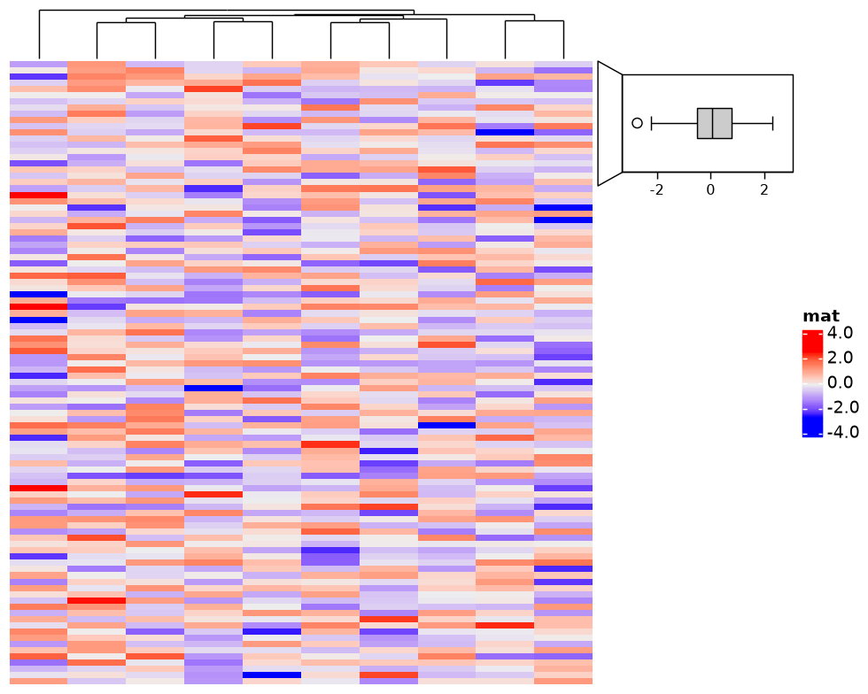
Like anno_mark(), pass target panel dimensions to
grid_grabExpr() when composing multi-panel figures (see Capturing
heatmaps with grid_grabExpr).
3.19 Text box annotation#
ComplexHeatmap-py supports word-flowed text boxes
via textbox_grob() and heatmap-linked
anno_textbox().
3.19.1 Construct the text box#
textbox_grob() builds a styled multi-word or
multi-sentence text box grob (and grid_textbox() draws one
directly). First, define a helper to generate random words or
sentences:
from complexheatmap import grid_draw, textbox_grob
def random_text(n, n_words=1):
letters = list("abcdefghijklmnopqrstuvwxyz")
out = []
for _ in range(n):
k = int(rng.integers(1, n_words + 1)) if n_words > 1 else 1
ws = ["".join(rng.choice(letters, int(rng.integers(4, 11)))) for _ in range(k)]
out.append(" ".join(ws))
return out
words = random_text(10)You can configure text colors, varying font sizes, background
fill/border, rounded corners, inner padding,
line_space, text_space,
max_width, and stacking direction
(first_text_from="top" or "bottom"):
fs_sorted = np.sort(rng.uniform(5, 20, 10))
textbox_grob(words)
textbox_grob(words, gp=gpar(col=list(range(1, 11))))
textbox_grob(words, gp=gpar(fontsize=rng.uniform(5, 20, 10)))
textbox_grob(words, background_gp=gpar(fill="#CCCCCC", col="#808080"))
textbox_grob(words, background_gp=gpar(fill="#CCCCCC", col=None), round_corners=True)
textbox_grob(words, background_gp=gpar(fill="#CCCCCC", col="#808080"), padding=unit(4, "mm"))
textbox_grob(words, line_space=unit(5, "mm"))
textbox_grob(words, text_space=unit(5, "mm"))
textbox_grob(words, gp=gpar(fontsize=fs_sorted), first_text_from="bottom")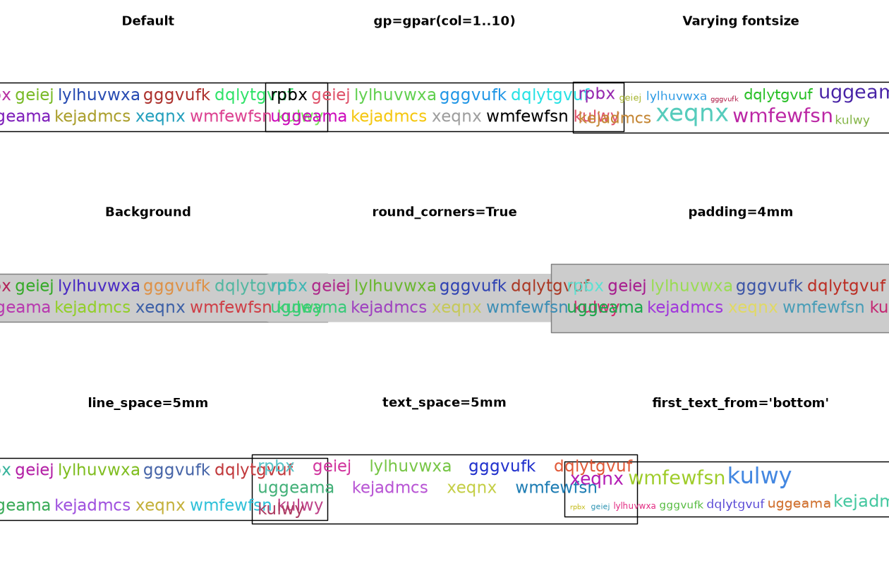
For multi-word sentences or phrases, combine
word_wrap=True, max_width, and
add_new_line=True (forcing each phrase onto its own
line):
sentences = random_text(5, 8)
fs_s = rng.uniform(6, 15, 5)
textbox_grob(sentences, gp=gpar(col=list(range(1, 6)), fontsize=fs_s))
textbox_grob(sentences, gp=gpar(col=list(range(1, 6)), fontsize=fs_s), word_wrap=True, max_width=unit(8, "cm"))
textbox_grob(sentences, gp=gpar(col=list(range(1, 6)), fontsize=fs_s), add_new_line=True)
textbox_grob(sentences, gp=gpar(col=list(range(1, 6)), fontsize=fs_s), add_new_line=True, word_wrap=True, max_width=unit(8, "cm"))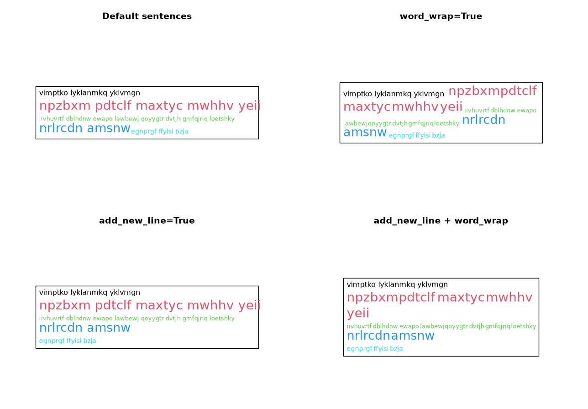
Use gb.width_mm() / gb.height_mm() (or
ch.grobWidth(gb) / ch.grobHeight(gb)) to query
dimensions, or call ch.grid_textbox(words, x, y)
directly.
3.19.2 Draw textbox annotation#
anno_textbox() links text boxes to row groups using
either by="anno_link" (default) or
by="anno_block", forwarding keyword options directly to
textbox_grob():
from complexheatmap import anno_textbox
mat = rng.standard_normal((100, 10))
split = np.repeat(list("abcdefghij"), 10)
text_d = {k: random_text(10) for k in list("abcdefghij")}
ch.draw(
Heatmap(mat, name="mat", cluster_rows=False, row_split=split)
+ rowAnnotation(textbox=anno_textbox(split, text_d, max_width=unit(9.0, "cm")))
)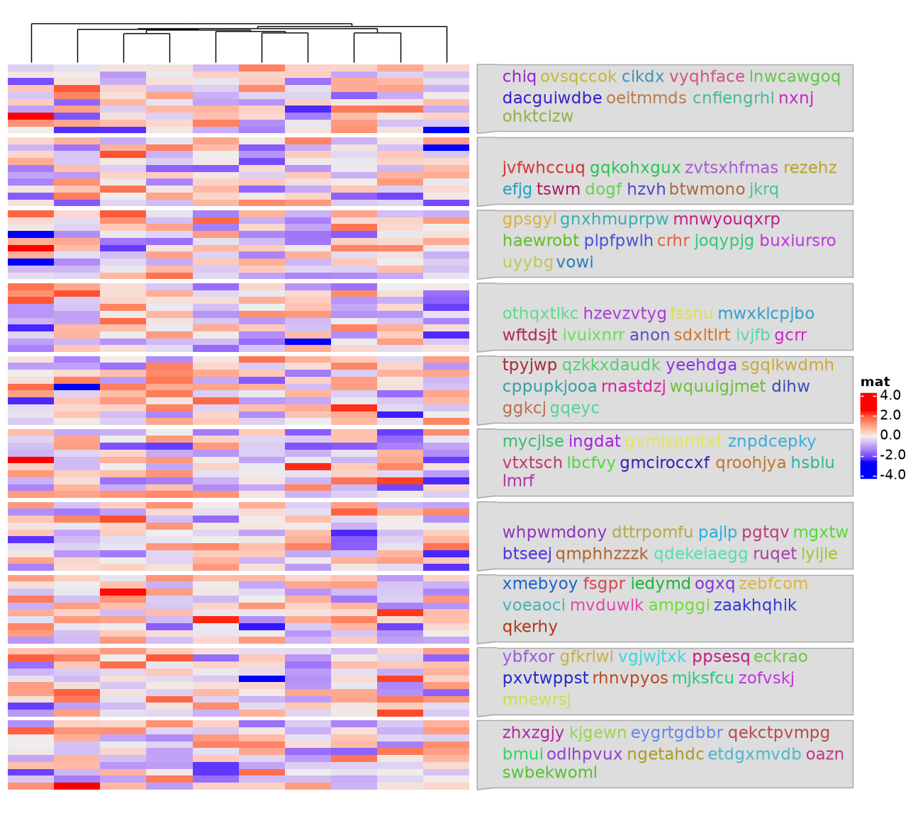
Place text boxes on the left side with side="left" and
prepend the rowAnnotation:
ch.draw(
rowAnnotation(textbox=anno_textbox(split, text_d, side="left", max_width=unit(9.0, "cm")))
+ Heatmap(mat, name="mat", cluster_rows=False, row_split=split, row_title=None)
)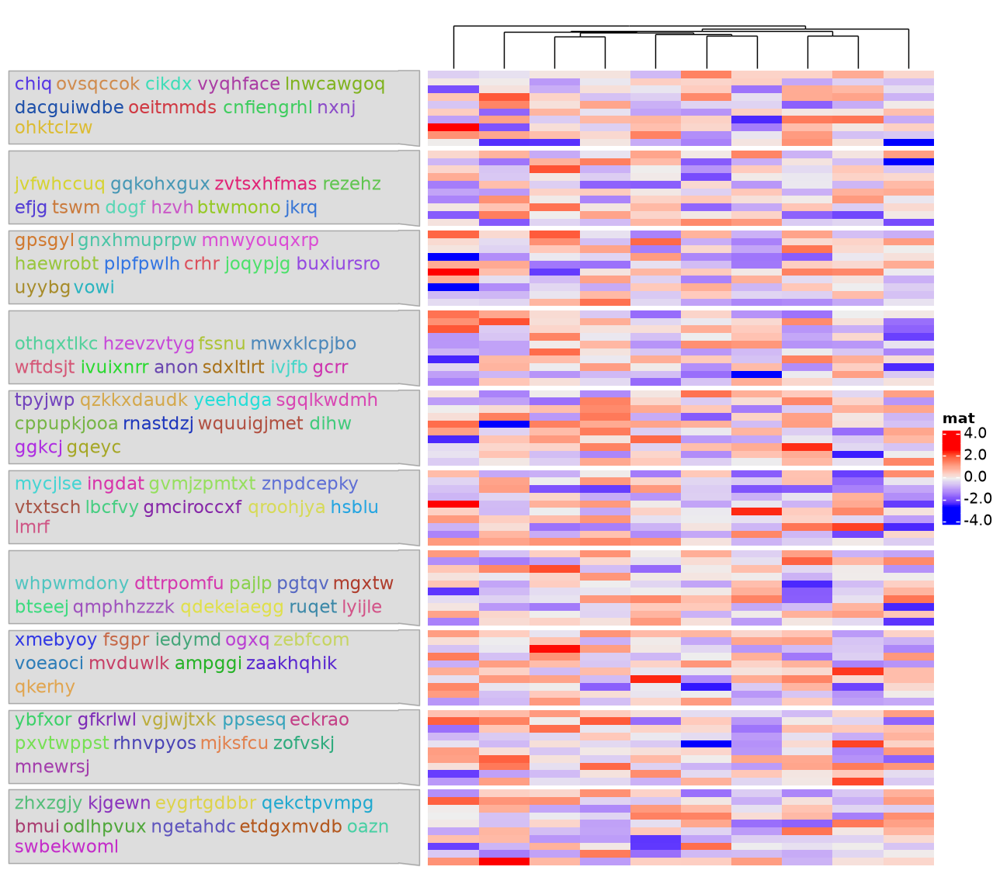
Forward word_wrap=True and
add_new_line=True when annotating slices with full
sentences:
split5 = np.repeat(list("abcde"), 20)
sent_d = {k: random_text(3, 5) for k in list("abcde")}
ch.draw(
Heatmap(mat, name="mat", row_split=split5)
+ rowAnnotation(textbox=anno_textbox(split5, sent_d, word_wrap=True, add_new_line=True, max_width=unit(10.0, "cm")))
)
As with anno_link(), the first argument can be a
dictionary of 0-based index lists covering only
selected slices, or contiguous row spans on an unclustered heatmap:
align5 = {k: [i for i, v in enumerate(split5) if v == k] for k in ("a", "b")}
ch.draw(
Heatmap(mat, name="mat", row_split=split5)
+ rowAnnotation(
textbox=anno_textbox(align5, {k: sent_d[k] for k in ("a", "b")}, word_wrap=True, add_new_line=True, max_width=unit(10.0, "cm"))
)
)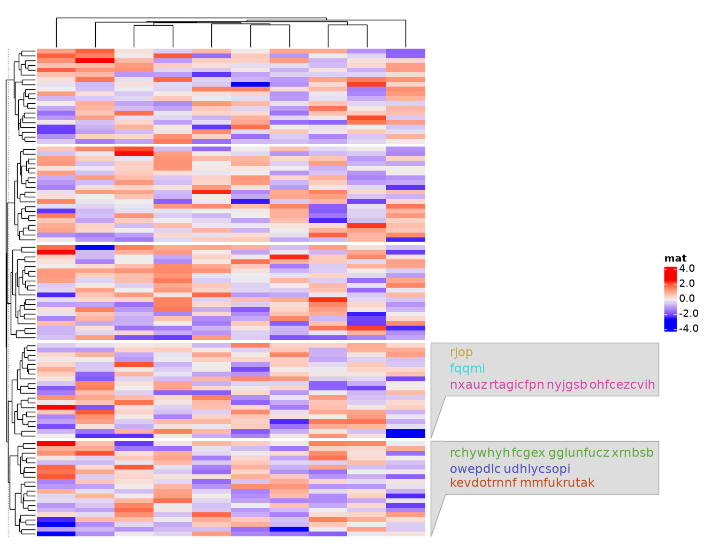
ch.draw(
Heatmap(
mat,
name="mat",
cluster_rows=False,
right_annotation=rowAnnotation(
textbox=anno_textbox(
{"a": list(range(10)), "b": list(range(10, 30))},
{k: sent_d[k] for k in ("a", "b")},
word_wrap=True,
add_new_line=True,
)
),
)
)
Setting by="anno_block" aligns each text box directly to
the exact height and position of its corresponding heatmap slice:
split_rep = np.tile(list("abcdefghij"), 10)
text_rep = {k: random_text(10) for k in list("abcdefghij")}
ch.draw(
Heatmap(
mat,
name="mat",
row_split=split_rep,
right_annotation=rowAnnotation(textbox=anno_textbox(split_rep, text_rep, by="anno_block")),
)
)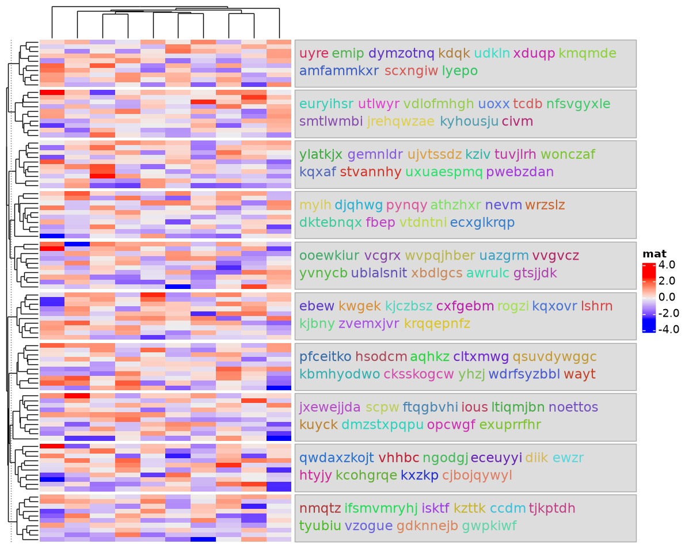
This also works for explicit 0-based row spans on unsplit heatmaps:
ch.draw(
Heatmap(
mat,
name="mat",
cluster_rows=False,
right_annotation=rowAnnotation(
textbox=anno_textbox({"a": list(range(10)), "b": list(range(49, 70))}, {k: text_rep[k] for k in ("a", "b")}, by="anno_block")
),
)
)To control per-word styling (col, fontsize,
fontfamily, fontface), pass a dictionary of
pandas.DataFrames whose first column contains the text
tokens:
from complexheatmap import rand_color
split_df = np.tile(list("abcde"), 20)
text_df_dict = {}
for k in list("abcde"):
df_k = pd.DataFrame({"text": random_text(10), "fontsize": rng.uniform(6, 11, 10)})
df_k["col"] = [rand_color(1, friendly=True)[0]] * 10 if rng.uniform() > 0.5 else list(range(1, 11))
text_df_dict[k] = df_k
ch.draw(
Heatmap(mat, name="mat", cluster_rows=False, row_split=split_df)
+ rowAnnotation(textbox=anno_textbox(split_df, text_df_dict, max_width=unit(11.5, "cm")))
)
3.20 Summary annotation#
anno_summary() is a specialized annotation for
single-column (or single-row) heatmaps that automatically summarizes
slice distributions when a heatmap is split—drawing stacked proportion
bars for discrete vectors and boxplots for continuous vectors.
For discrete one-column heatmaps, bar colors are inherited
automatically from the heatmap’s col mapping:
from complexheatmap import anno_summary
ha_disc = HeatmapAnnotation(summary=anno_summary(height=unit(4, "cm")))
v_cat = rng.choice(["a", "b"], 50)
sp = rng.choice(["a", "b"], 50)
ch.draw(Heatmap(v_cat, name="mat", col={"a": "red", "b": "blue"}, top_annotation=ha_disc, width=unit(2, "cm"), row_split=sp))
For continuous one-column heatmaps, pass slice boxplot colors via
gp:
ha_cont = HeatmapAnnotation(summary=anno_summary(gp=gpar(fill=[2, 3]), height=unit(4, "cm")))
v_num = rng.standard_normal(50)
ch.draw(Heatmap(v_num, name="mat", top_annotation=ha_cont, width=unit(2, "cm"), row_split=sp))
Single-column heatmaps with anno_summary() are typically
concatenated horizontally beside a main expression matrix (see A List of Heatmaps and Discrete legends):
m = rng.standard_normal((50, 10))
ht_list = (
Heatmap(m, name="main_matrix")
+ Heatmap(v_cat, name="mat1", top_annotation=HeatmapAnnotation(summary=anno_summary(height=unit(3, "cm"))), width=unit(1, "cm"))
+ Heatmap(v_num, name="mat2", top_annotation=HeatmapAnnotation(summary=anno_summary(gp=gpar(fill=[2, 3]), height=unit(3, "cm"))), width=unit(1, "cm"))
)
lgd_bp = Legend(labels=["group a", "group b"], title="group", legend_gp=gpar(fill=["red", "blue"]))
ch.draw(ht_list, row_split=sp, ht_gap=unit(5, "mm"), heatmap_legend_list=[lgd_bp])
3.21 Multiple annotations#
3.21.1 General settings#
When multiple annotations are combined inside
HeatmapAnnotation() or rowAnnotation(),
collection-level arguments can be passed as single values, full-length
vectors, or dictionaries keyed by annotation name.
show_legend toggles legends for simple annotations
({name: bool} or list):
ha_leg = HeatmapAnnotation(
foo=np.arange(1, 11),
bar=mat2,
pt=anno_points(np.arange(1, 11)),
show_legend={"bar": False},
)
ch.draw(Heatmap(rng.standard_normal((10, 10)), name="mat", top_annotation=ha_leg))
gp sets grid border parameters across simple
annotations, while show_annotation_name and
border accept per-annotation dictionaries:
ch.draw(HeatmapAnnotation(foo=np.arange(1, 11), bar=mat2, pt=anno_points(np.arange(1, 11)), gp=gpar(col="red")), test=True)
ch.draw(
HeatmapAnnotation(
foo=np.arange(1, 11),
bar=mat2,
pt=anno_points(np.arange(1, 11)),
show_annotation_name={"bar": False},
border={"foo": True},
),
test=True,
)
annotation_name_gp, annotation_name_offset,
annotation_name_side, and annotation_name_rot
style and position the annotation labels, while gap
controls spacing between consecutive tracks (scalar or vector
Unit):
ch.draw(HeatmapAnnotation(foo=np.arange(1, 11), bar=mat2, pt=anno_points(np.arange(1, 11)), gap=unit(2, "mm")), test=True)
ch.draw(HeatmapAnnotation(foo=np.arange(1, 11), bar=mat2, pt=anno_points(np.arange(1, 11)), gap=unit([2, 10], "mm")), test=True)
3.21.2 Size of annotations#
height, width,
annotation_height, and annotation_width adjust
the overall dimensions of a multi-annotation stack. Normally, individual
track sizes sum automatically (foo: 1 cm for 2
rows, bar: 5 mm, pt:
1 cm):
ch.draw(HeatmapAnnotation(foo=mat2, bar=np.arange(1, 11), pt=anno_points(np.arange(1, 11))), test=True)Setting total height=unit(6, "cm") keeps simple
annotation heights unchanged and expands the complex annotations
proportionally:
ch.draw(HeatmapAnnotation(foo=mat2, bar=np.arange(1, 11), pt=anno_points(np.arange(1, 11)), height=unit(6, "cm")), test=True)
Combine simple_anno_size=unit(1, "cm") with
height=unit(6, "cm") to scale simple tracks explicitly
alongside complex ones:
ch.draw(
HeatmapAnnotation(foo=mat2, bar=np.arange(1, 11), pt=anno_points(np.arange(1, 11)), simple_anno_size=unit(1, "cm"), height=unit(6, "cm")),
test=True,
)Use annotation_height with absolute units, or relative
numbers paired with total height:
ch.draw(HeatmapAnnotation(foo=mat2, bar=np.arange(1, 11), pt=anno_points(np.arange(1, 11)), annotation_height=unit([1, 2, 3], "cm")), test=True)
ch.draw(
HeatmapAnnotation(foo=mat2, bar=np.arange(1, 11), pt=anno_points(np.arange(1, 11)), annotation_height=[1, 2, 3], height=unit(6, "cm")),
test=True,
)

When a HeatmapAnnotation contains only simple
annotations, setting height alone does not stretch them
unless simple_anno_size_adjust=True:
ch.draw(HeatmapAnnotation(foo=mat2, bar=np.arange(1, 11), height=unit(6, "cm")), test=True)
ch.draw(HeatmapAnnotation(foo=mat2, bar=np.arange(1, 11), height=unit(6, "cm"), simple_anno_size_adjust=True), test=True)
See Annotations as components are adjusted for how annotation sizes harmonize across multiple heatmaps.
3.21.3 Annotation labels#
Customize display names via annotation_label (plain
strings or gt_render() rich text) and rotate labels via
annotation_name_rot:
ch.draw(
HeatmapAnnotation(
foo=np.arange(1, 11),
bar=mat2,
pt=anno_points(np.arange(1, 11)),
annotation_label=["Annotation_foo", "Annotation_bar", "Annotation_pt"],
),
test=True,
)ha_gt = HeatmapAnnotation(
foo=np.arange(1, 11),
bar=mat2,
pt=anno_points(np.arange(1, 11)),
annotation_label=[
gt_render("**Anno**_<span style='color:red'>foo</span>", padding=unit([2, 2, 2, 2], "pt")),
gt_render("**Anno**_<span style='color:blue'>bar</span>", padding=unit([2, 2, 2, 2], "pt")),
gt_render("**Anno**_<span style='color:green'>pt</span>", padding=unit([2, 2, 2, 2], "pt")),
],
annotation_name_gp=gpar(box_fill="lightgrey"),
)
ch.draw(Heatmap(rng.standard_normal((10, 10)), name="mat", top_annotation=ha_gt))
Rotate annotation names on column or row annotations with
annotation_name_rot:
ha_rot_col = HeatmapAnnotation(foo=np.arange(1, 11), bar=mat2, pt=anno_points(np.arange(1, 11)), annotation_name_rot=45)
ch.draw(Heatmap(rng.standard_normal((10, 10)), name="mat", top_annotation=ha_rot_col))
ha_rot_row = rowAnnotation(foo=np.arange(1, 11), bar=mat2, pt=anno_points(np.arange(1, 11)), annotation_name_rot=45)
ch.draw(Heatmap(rng.standard_normal((10, 10)), name="mat", left_annotation=ha_rot_row))3.22 Utility functions#
HeatmapAnnotation objects expose convenient inspection,
concatenation, subsetting, and attachment helpers:
ha = HeatmapAnnotation(foo=np.arange(1, 11), bar=mat2, pt=anno_points(np.arange(1, 11)))
len(ha) # 3
ha.nobs() # 10 (or ch.nobs(ha))
ha.names # ['foo', 'bar', 'pt'] (or ch.names(ha))
ha.names = ["FOO", "BAR", "PT"]Concatenate two compatible HeatmapAnnotation objects
(matching nobs and distinct annotation names) using
ch.c(ha1, ha2):
from complexheatmap import c
ha1 = HeatmapAnnotation(foo=np.arange(1, 11), bar=mat2, pt=anno_points(np.arange(1, 11)))
ha2 = HeatmapAnnotation(FOO=rng.uniform(size=10), BAR=rng.choice(["a", "b"], 10), PT=anno_points(rng.standard_normal(10)))
ha = c(ha1, ha2)
ch.draw(ha, test=True)
Subset annotations using 0-based observation slicing
(:5) and annotation name selection
(["foo", "PT"]):
ha_sub = ha[:5, ["foo", "PT"]]
print(ha_sub)
# A HeatmapAnnotation object with 2 annotation(s)
# name: heatmap_annotation_1
# position: column
# items: 5
# width: 1npc
# height: 15.3515mm
# annotations: ['foo', 'PT']
ch.draw(ha_sub, test=True)You can also attach annotations to an existing Heatmap
after construction using attach_annotation():
# Code only for demonstration
ha1 = HeatmapAnnotation(foo=np.arange(1, 11))
ha2 = rowAnnotation(bar=list("abcdefghij"))
ht = Heatmap(mat)
ht = ch.attach_annotation(ht, ha1, side="top")
ht = ch.attach_annotation(ht, ha2, side="left")3.23 Implement new annotation functions#
Every built-in anno_*() helper constructs an
AnnotationFunction object. When you need custom graphics
that support reordering and heatmap splitting, construct an
AnnotationFunction directly:
fun(index, k=1, n=1): draws the slice.indexis the vector of 0-based reordered row/column indices for slicek(out ofntotal slices).var_import: dictionary of external variables accessed byfun.subsettable=Trueandn: enables automatic subsetting and heatmap splitting.
Below we build a custom “lollipop” annotation that draws a y-axis
only on the first slice (k == 1):
from complexheatmap import AnnotationFunction, grid_segments
x = np.arange(1, 11, dtype=float)
def _lollipop(index, k=1, n=1):
m_len = len(index)
pushViewport(Viewport(xscale=(0.5, m_len + 0.5), yscale=(0, 10)))
grid_rect()
grid_points(np.arange(1, m_len + 1), x[index], default_units="native")
grid_segments(np.arange(1, m_len + 1), 0, np.arange(1, m_len + 1), x[index], default_units="native")
if k == 1:
ch.grid_yaxis()
popViewport()
anno1 = AnnotationFunction(
fun=_lollipop,
var_import={"x": x},
n=10,
subsettable=True,
height=unit(2, "cm"),
)
print(anno1)
# An AnnotationFunction object
# function: user-defined
# position: column
# items: 10
# width: 1npc
# height: 2cm
# subsettable: TrueAttaching anno1 works seamlessly with both unsplit and
column_split heatmaps:
m = np.vstack([np.arange(1, 11), np.arange(11, 21)])
ht1 = Heatmap(m, name="mat1", top_annotation=HeatmapAnnotation(foo=anno1))
ht2 = Heatmap(m, name="mat2", top_annotation=HeatmapAnnotation(foo=anno1), column_split=np.repeat(["A", "B"], 5))All built-in anno_*() constructors return
AnnotationFunction instances as well:
print(anno_points(np.arange(1, 11)))
# An AnnotationFunction object
# function: anno_points()
# position: column
# items: 10
# width: 1npc
# height: 1cm
# subsettable: TrueFor quick one-off graphics without writing an
AnnotationFunction, you can replicate the same split-aware
plot using anno_empty() plus 1-based
decorate_annotation(..., slice=1) / slice=2
and 0-based column_order():
ht_empty = Heatmap(
m,
name="mat",
top_annotation=HeatmapAnnotation(foo=anno_empty(height=unit(2, "cm"))),
column_split=np.repeat(["A", "B"], 5),
)
res = ch.draw(ht_empty)
co = column_order(res)
with decorate_annotation("foo", slice=1):
od = co[0]
pushViewport(Viewport(xscale=(0.5, len(od) + 0.5), yscale=(0, 10)))
grid_points(np.arange(1, len(od) + 1), x[od], default_units="native")
grid_segments(np.arange(1, len(od) + 1), 0, np.arange(1, len(od) + 1), x[od], default_units="native")
ch.grid_yaxis()
popViewport()
with decorate_annotation("foo", slice=2):
od = co[1]
pushViewport(Viewport(xscale=(0.5, len(od) + 0.5), yscale=(0, 10)))
grid_points(np.arange(1, len(od) + 1), x[od], default_units="native")
grid_segments(np.arange(1, len(od) + 1), 0, np.arange(1, len(od) + 1), x[od], default_units="native")
popViewport()
3.23.1 Construct annotation
function by cell_fun#
When drawing cell-by-cell graphics for small-to-moderate annotations,
pass cell_fun(i) to AnnotationFunction(). Here
i is the 0-based original observation
index, and AnnotationFunction automatically iterates over
cells and enables splitting/subsetting. This is the pattern behind
anno_numeric() (Numeric labels
annotation):
from complexheatmap import grid_roundrect
def anno_pct(xv):
max_x = float(np.max(xv))
text_lbl = [f"{val * 100:.2f}%" for val in xv]
def cell_fun_pct(i):
pushViewport(Viewport(xscale=(0, max_x)))
grid_roundrect(
x=unit(1, "npc"),
width=unit(float(xv[i]), "native"),
height=unit(1, "npc") - unit(4, "pt"),
just="right",
gp=gpar(fill="#0000FF80", col=None),
)
grid_text(text_lbl[i], x=unit(1, "npc"), just="right")
popViewport()
return AnnotationFunction(
cell_fun=cell_fun_pct,
var_import={"max_x": max_x, "x": xv, "text": text_lbl},
which="row",
n=len(xv),
width=max_text_width(text_lbl) * 1.25,
)
xv = rng.uniform(size=10)
ha_pct = rowAnnotation(foo=anno_pct(xv), annotation_name_rot=0)
m_pct = pd.DataFrame(rng.standard_normal((10, 10)), index=[f"{val:.4f}" for val in xv])
ch.draw(ha_pct + Heatmap(m_pct, name="mat"))